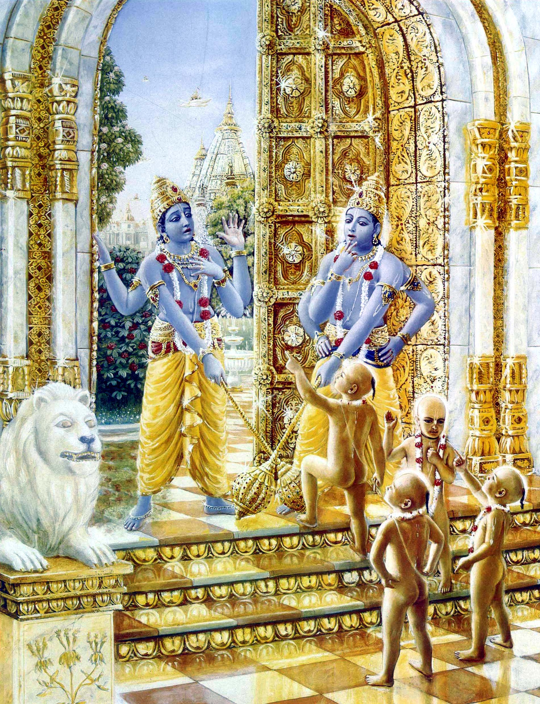
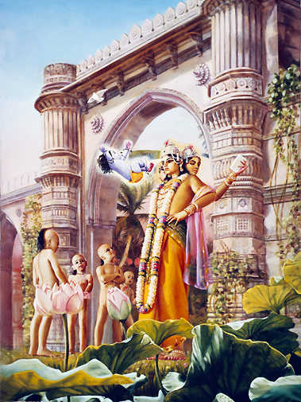

Chapter 5: The Two Doorkeepers of Vaikuṇṭha, Jaya and Vijaya, Cursed by the Sages
3.16.1 — Lord Brahmā said: After thus congratulating the sages for their nice words, the Supreme Personality of Godhead, whose abode is in the kingdom of God, spoke as follows.
3.16.2 — The Personality of Godhead said: These attendants of Mine, Jaya and Vijaya by name, have committed a great offense against you because of ignoring Me.
3.16.3 — O great sages, I approve of the punishment that you who are devoted to Me have meted out to them.
3.16.4 — To Me, the brāhmaṇa is the highest and most beloved personality. The disrespect shown by My attendants has actually been displayed by Me because the doormen are My servitors. I take this to be an offense by Myself; therefore I seek your forgiveness for the incident that has arisen.
3.16.5 — A wrong act committed by a servant leads people in general to blame his master, just as a spot of white leprosy on any part of the body pollutes all of the skin.

3.16.6 — Anyone in the entire world, even down to the caṇḍāla, who lives by cooking and eating the flesh of the dog, is immediately purified if he takes bath in hearing through the ear the glorification of My name, fame, etc. Now you have realized Me without doubt; therefore I will not hesitate to lop off My own arm if its conduct is found hostile to you.
3.16.7 — The Lord continued: Because I am the servitor of My devotees, My lotus feet have become so sacred that they immediately wipe out all sin and I have acquired such a disposition that the goddess of fortune does not leave Me, even though I have no attachment for her, while others praise her beauty and observe sacred vows to secure from her even a slight favor.
3.16.8 — I do not enjoy the oblations offered by the sacrificers in the sacrificial fire, which is one of My own mouths, with the same relish as I do the delicacies overflowing with ghee which are offered to the mouths of the brāhmaṇas who have dedicated to Me the results of their activities and who are ever satisfied with My prasāda.
3.16.9 — I am the master of My unobstructed internal energy, and the water of the Ganges is the remnant left after My feet are washed. That water sanctifies the three worlds, along with Lord Śiva, who bears it on his head. If I can take the dust of the feet of the Vaiṣṇava on My head, who will refuse to do the same?
3.16.10 — The brāhmaṇas, the cows and the defenseless creatures are My own body. Those whose faculty of judgment has been impaired by their own sin look upon these as distinct from Me. They are just like furious serpents, and they are angrily torn apart by the bills of the vulturelike messengers of Yamarāja, the superintendent of sinful persons.
3.16.11 — On the other hand, they captivate My heart who are gladdened in heart and who, their lotus faces enlightened by nectarean smiles, respect the brāhmaṇas, even though the brāhmaṇas utter harsh words. They look upon the brāhmaṇas as My own Self and pacify them by praising them in loving words, even as a son would appease an angry father or as I am pacifying you.
3.16.12 — These servants of Mine have transgressed against you, not knowing the mind of their master. I shall therefore deem it a favor done to Me if you order that, although reaping the fruit of their transgression, they may return to My presence soon and the time of their exile from My abode may expire before long.
3.16.13 — Brahmā continued: Even though the sages had been bitten by the serpent of anger, their souls were not satiated with hearing the Lord’s lovely and illuminating speech, which was like a series of Vedic hymns.
3.16.14 — The Lord’s excellent speech was difficult to comprehend because of its momentous import and its most profound significance. The sages heard it with wide-open ears and pondered it as well. But although hearing, they could not understand what He intended to do.
3.16.15 — The four brāhmaṇa sages were nevertheless extremely delighted to behold Him, and they experienced a thrill throughout their bodies. They then spoke as follows to the Lord, who had revealed the multiglories of the Supreme Personality through His internal potency, yoga-māyā.
3.16.16 — The sages said: O Supreme Personality of Godhead, we are unable to know what You intend for us to do, for even though You are the supreme ruler of all, You speak in our favor as if we had done something good for You.
3.16.17 — O Lord, You are the supreme director of the brahminical culture. Your considering the brāhmaṇas to be in the highest position is Your example for teaching others. Actually You are the supreme worshipable Deity, not only for the gods but for the brāhmaṇas also.
3.16.18 — You are the source of the eternal occupation of all living entities, and by Your multimanifestations of Personalities of Godhead, You have always protected religion. You are the supreme objective of religious principles, and in our opinion You are inexhaustible and unchangeable eternally.
3.16.19 — Mystics and transcendentalists, by the mercy of the Lord, cross beyond nescience by ceasing all material desires. It is not possible, therefore, that the Supreme Lord can be favored by others.

3.16.20 — The goddess of fortune, Lakṣmī, the dust of whose feet is worn on the head by others, waits upon You, as appointed, for she is anxious to secure a place in the abode of the king of bees, who hovers on the fresh wreath of tulasī leaves offered at Your feet by some blessed devotee.
3.16.21 — O Lord, You are exceedingly attached to the activities of Your pure devotees, yet You are never attached to the goddesses of fortune who constantly engage in Your transcendental loving service. How can You be purified, therefore, by the dust of the path traversed by the brāhmaṇas, and how can You be glorified or made fortunate by the marks of Śrīvatsa on Your chest?
3.16.22 — O Lord, You are the personification of all religion. Therefore You manifest Yourself in three millenniums, and thus You protect this universe, which consists of animate and inanimate beings. By Your grace, which is of pure goodness and is the bestower of all blessings, kindly drive away the elements of rajas and tamas for the sake of the demigods and twice-born.
3.16.23 — O Lord, You are the protector of the highest of the twice-born. If You do not protect them by offering worship and mild words, then certainly the auspicious path of worship will be rejected by people in general, who act on the strength and authority of Your Lordship.
3.16.24 — Dear Lord, You never want the auspicious path to be destroyed, for You are the reservoir of all goodness. Just to benefit people in general, You destroy the evil element by Your mighty potency. You are the proprietor of the three creations and the maintainer of the entire universe. Therefore Your potency is not reduced by Your submissive behavior. Rather, by submission You exhibit Your transcendental pastimes.
3.16.25 — O Lord, whatever punishment You wish to award to these two innocent persons, or also to us, we shall accept without duplicity. We understand that we have cursed two faultless persons.
3.16.26 — The Lord replied: O brāhmaṇas, know that the punishment you inflicted on them was originally ordained by Me, and therefore they will fall to a birth in a demoniac family. But they will be firmly united with Me in thought through mental concentration intensified by anger, and they will return to My presence shortly.
3.16.27 — Lord Brahmā said: After seeing the Lord of Vaikuṇṭha, the Supreme Personality of Godhead, in the self-illuminated Vaikuṇṭha planet, the sages left that transcendental abode.
3.16.28 — The sages circumambulated the Supreme Lord, offered their obeisances and returned, extremely delighted at learning of the divine opulences of the Vaiṣṇava.
3.16.29 — The Lord then said to His attendants, Jaya and Vijaya: Depart this place, but fear not. All glories unto you. Though I am capable of nullifying the brāhmaṇas’ curse, I would not do so. On the contrary, it has My approval.
3.16.30 — This departure from Vaikuṇṭha was foretold by Lakṣmī, the goddess of fortune. She was very angry because when she left My abode and then returned, you stopped her at the gate while I was sleeping.
3.16.31 — The Lord assured the two Vaikuṇṭha inhabitants, Jaya and Vijaya: By practicing the mystic yoga system in anger, you will be cleansed of the sin of disobeying the brāhmaṇas and within a very short time return to Me.
3.16.32 — After thus speaking at the door of Vaikuṇṭha, the Lord returned to His abode, where there are many celestial airplanes and all-surpassing wealth and splendor.
3.16.33 — But those two gatekeepers, the best of the demigods, their beauty and luster diminished by the curse of the brāhmaṇas, became morose and fell from Vaikuṇṭha, the abode of the Supreme Lord.
3.16.34 — Then, as Jaya and Vijaya fell from the Lord’s abode, a great roar of disappointment arose from all the demigods, who were sitting in their splendid airplanes.
3.16.35 — Lord Brahmā continued: Those two principal doorkeepers of the Personality of Godhead have now entered the womb of Diti, the powerful semen of Kaśyapa Muni having covered them.
3.16.36 — It is the prowess of these twin asuras [demons] that has disturbed you, for it has minimized your power. There is no remedy within my power, however, for it is the Lord Himself who desires to do all this.
3.16.37 — My dear sons, the Lord is the controller of the three modes of nature and is responsible for the creation, preservation and dissolution of the universe. His wonderful creative power, yoga-māyā, cannot be easily understood even by the masters of yoga. That most ancient person, the Personality of Godhead, will alone come to our rescue. What purpose can we serve on His behalf by deliberating on the subject?